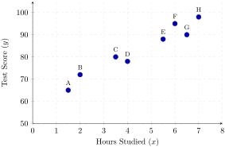
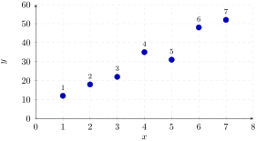
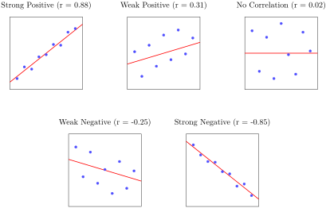
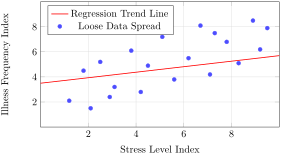
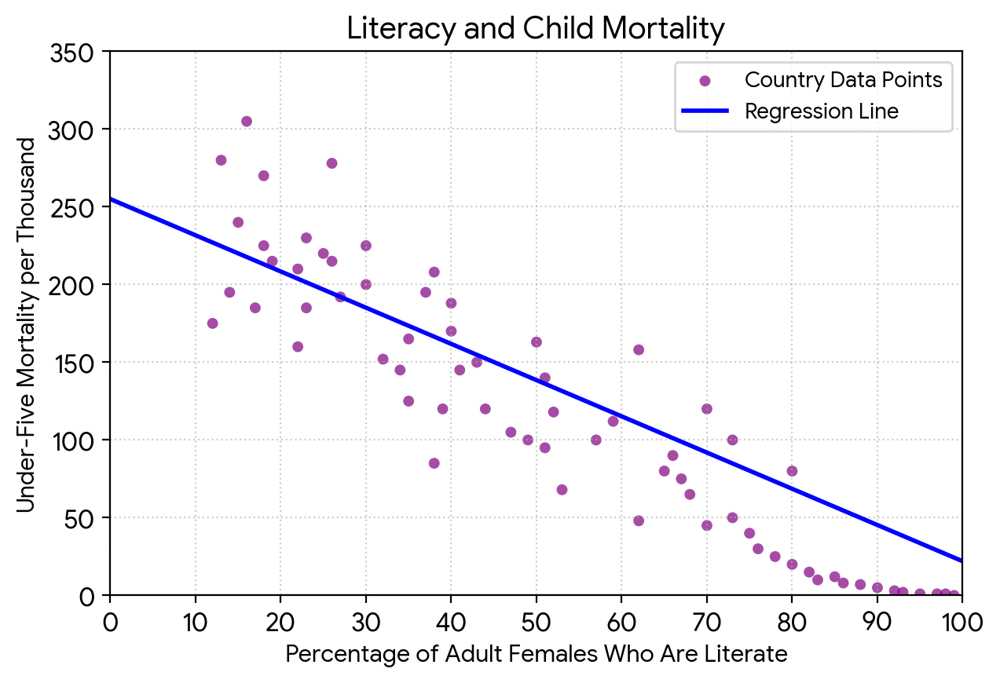
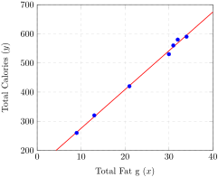

Definition 4.90. Scatter Plot.
A scatter plot is a type of plot that displays the relationship between two numerical variables. Each point on the plot represents a single observation, with its position determined by the values of the two variables.
| Student | Hours Studied (\(x\)) | Test Score (\(y\)) |
|---|---|---|
| A | 1.5 | 65 |
| B | 2.0 | 72 |
| C | 3.5 | 80 |
| D | 4.0 | 78 |
| E | 5.5 | 88 |
| F | 6.0 | 95 |
| G | 6.5 | 90 |
| H | 7.0 | 98 |

| Observation | Variable \(x\) | Variable \(y\) |
|---|---|---|
| 1 | 1 | 12 |
| 2 | 2 | 18 |
| 3 | 3 | 22 |
| 4 | 4 | 35 |
| 5 | 5 | 31 |
| 6 | 6 | 48 |
| 7 | 7 | 52 |




| Number of Widgets (\(x\)) | Length of Package in. (\(y\)) |
| 3 | 9.00 |
| 4 | 9.25 |
| 5 | 9.50 |
| 6 | 9.75 |
![A scatter plot displaying four blue data points aligned upward on a Cartesian coordinate plane. The horizontal axis represents the Number of Widgets from 2 to 7, and the vertical axis represents the Length of the Package in inches from 8 to 11. The four data points are located at coordinates (3, 9.00), (4, 9.25), (5, 9.50), and (6, 9.75). A solid red regression line trends upward through all four points, crossing the vertical axis at a y-intercept value of 8.25, demonstrating a positive linear correlation described by the equation y equals 0.25x plus 8.25.](generated/latex-image/fig-widget-regression-2.svg)
| Total Fat g (\(x\)) | Total Calories (\(y\)) |
|---|---|
| 9 | 260 |
| 13 | 320 |
| 21 | 420 |
| 30 | 530 |
| 31 | 560 |
| 32 | 580 |
| 34 | 590 |

| Time minutes (\(x\)) | Temp. \(^\circ\)F (\(y\)) |
|---|---|
| 0 | 75 |
| 1 | 71 |
| 2 | 66 |
| 3 | 62 |
| 4 | ? |
![A scatter plot displaying historical temperature drops during a solar eclipse on a coordinate plane. The horizontal axis represents elapsed time in minutes from negative 0.5 to 4.5. The vertical axis measures temperature in degrees Fahrenheit from 55 to 80. Four blue circular data points are plotted at coordinates (0, 75), (1, 71), (2, 66), and (3, 62). A solid red regression line passes downward through the points. A green ’X’ mark highlights the target prediction location on the red line at coordinate point (4, 57.5), demonstrating an overall negative linear correlation.](generated/latex-image/fig-eclipse-regression-2.svg)
| Day of Campaign (\(x\)) | Number of Coats Stored (\(y\)) |
|---|---|
| 1 | 860 |
| 2 | 930 |
| 3 | 1000 |
| 4 | 1150 |
| 5 | 1200 |
| 6 | 1360 |